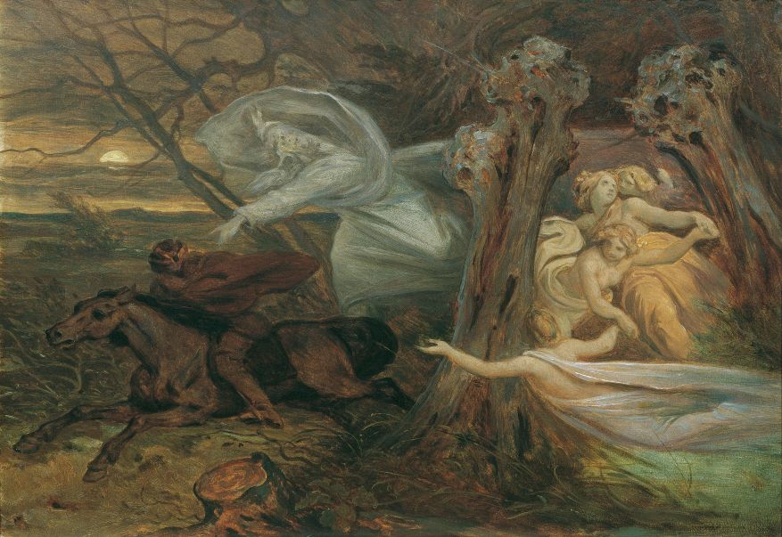
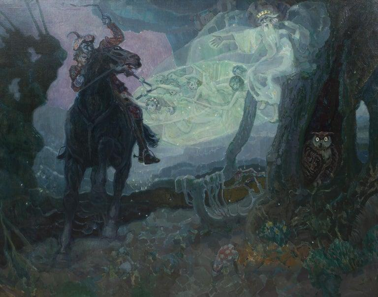

The Story
Imagine Germany, sometime around the late 18th century.
It's nighttime. A father is riding through a dark forest on horseback, carrying his young son. They're trying to get home as quickly as possible. The boy suddenly becomes frightened.

“Father, do you see the Erl King?”
The father looks around.
Nothing.
He tells his son that it's only the fog, the trees, or the shadows.
But the boy keeps seeing him.
The Erl King appears as a mysterious figure moving alongside them through the forest. He speaks directly to the child, trying to entice him:
“Come with me, my child.”
The father can't see anyone.
The boy becomes increasingly terrified. The Erl King promises him beautiful things—flowers, games, and companionship—but his invitations become increasingly threatening. The father rides faster.

Eventually the boy cries out that the Erl King has touched him.
The father desperately urges his horse onward.
Then they finally reach their destination.
The father gets off the horse and looks down at his son.
The boy is dead.
That's the basic story behind Goethe's famous poem “Der Erlkönig,” written in 1782.

😨 What makes it especially creepy
The most disturbing part is that there are two possible explanations.
Supernatural interpretation: The Erl King is a real supernatural being who has been hunting the child throughout the journey. The father simply cannot perceive him.
Realistic interpretation: The child is extremely sick and delirious. He's hallucinating the Erl King while his father desperately tries to explain away what he's seeing. By the time they reach home, the illness has killed him.
Goethe deliberately makes the story work both ways.

👑 Who is the ErlKing?
Who is the Erl King?
Interestingly, the Erlkönig wasn't originally a traditional German "king of the elves."
Goethe adapted the idea from Danish folklore. The Danish figure was Ellekongen, essentially an "Elf King." When the story was translated into German, the name became Erlkönig.
Over time, however, the Erlkönig became associated with German Romantic folklore as a mysterious supernatural figure who lives in the wilderness and lures people—especially children—to their deaths.
🎵 And there's an incredible musical version
Schubert's Erlkönig
The story became even more famous because Franz Schubert composed his famous song “Erlkönig” in 1815.
It's basically the entire story performed as a dramatic piece for one singer and piano. The singer portrays the:
Narrator
Father
Son
Erl King
The piano constantly pounds out rapid notes representing the father's horse racing through the forest.!